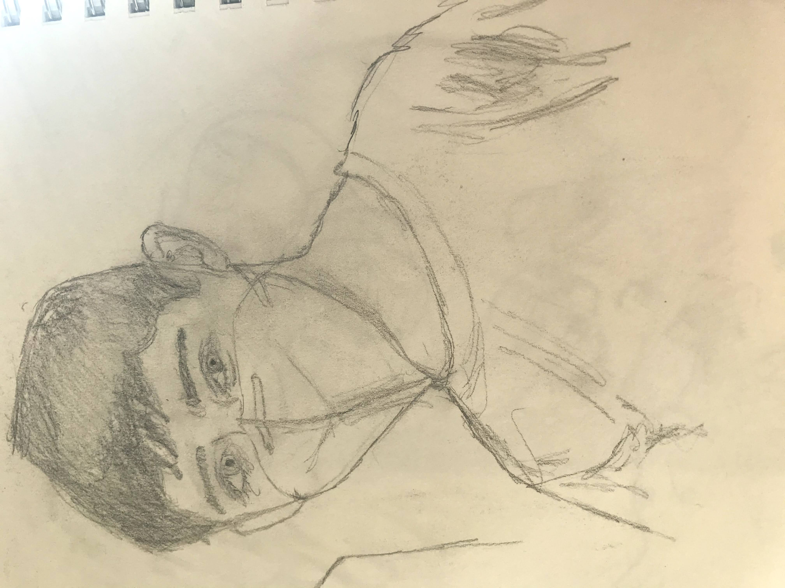
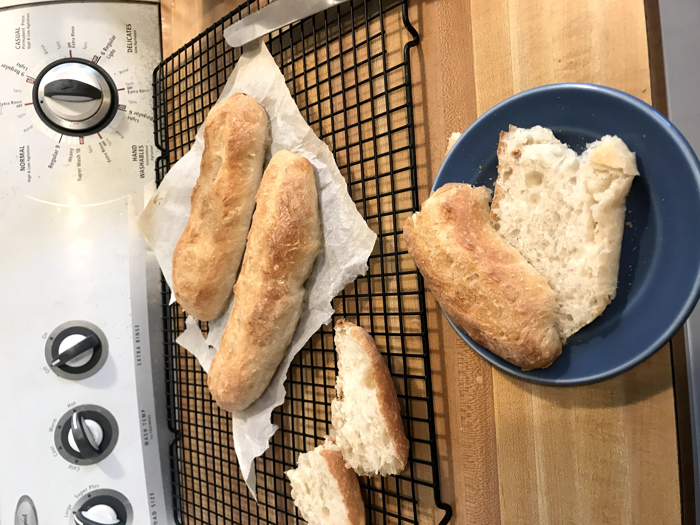
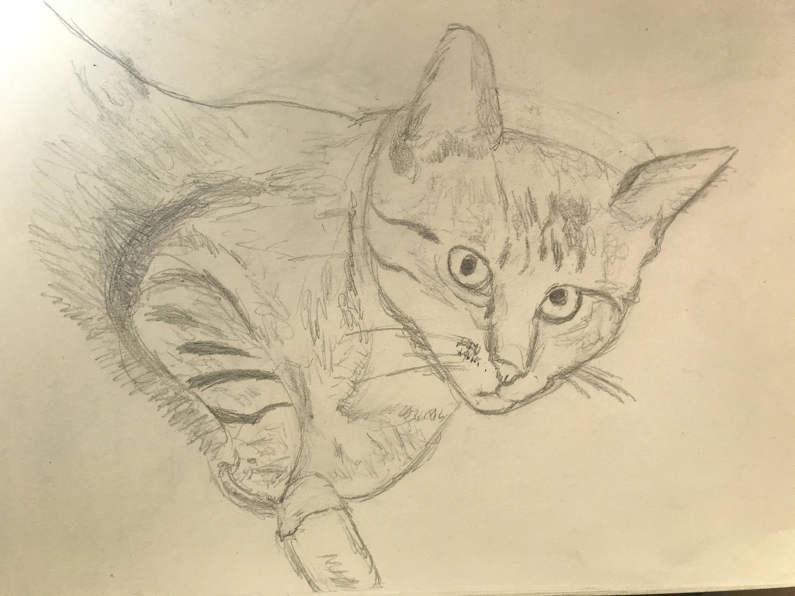

Accomplishments/Awards
- First Degree Black Belt In Kaju Bujitsu Kwai at Valor MMAValor MMA by Master Phipps (June 9th, 2018)
- Spelling bee Champion of P.S.166 In 5th Grade(2015)
- 4th in the district, 12th in the borough.
School Experience
- P.S.166 Grades K-5 2010-2016
- Little Red School House Grades 6-8 2016-2019
- Elisabeth Irwin High School Grades 9-today 2019-today
- Class Representative in Eighth Grade.
Service + Job Experience
- Worked as a Camp Counselor at my karate school Valor MMA
- Participated in the Martin Luther King Day of Service for 4 years at LREI.
- Helped small kids enter into P.S. 166 as a fifth grader.
Interests
- I am incredibly interested in becoming an environmental scientist and the climate in general. In Eighth Grade for the Social Justice Project, my group focused on coral bleaching and its effects on our world.
- I am also an athlete in martial arts, participating in many competitions statewide. I recently had to get ACL Reconstructive surgery and am currently 6 months post-op. It was definitely a difficult experience but ultimately made me appreciate things I had taken for granted.
- Among my other interests are drawing, baking, skateboarding, practicing tricking and running.
Here are some pictures:

Here are pictures from after the 4 hour first degree black belt test (in 2018). I am getting my black belt from my instructor, and standing with my parents and my new belt.



Here is a self portrait, and a portrait of my cat named Darwin.
Here are some baguettes that I made.